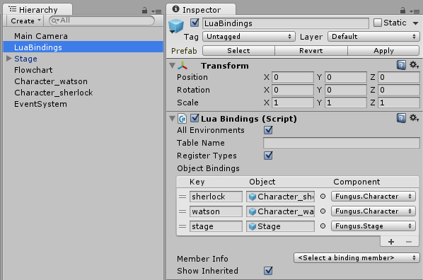

Controlling Fungus
The Fungus module provides several functions for working with the standard Fungus narrative features and flowcharts.
You can control Say and Menu dialogs in much the same way you use Say and Menu commands in a normal Fungus flowchart.
When you use the menu() function, you supply another Lua function to call when that menu option is selected. Make sure to define the function higher up in the file before referencing it in a menu() call. If you don't explicitly set a SayDialog or MenuDialog object to use default ones are created automatically.
Narrative example
This example Lua script demonstrates some of the Say and Menu dialog functions. To try it out, add a Lua object to the scene (Tools > Fungus > Create > Lua) and copy this script into the Lua Script text box. You may also need to add an EventSystem object in the scene (GameObject > UI > Event System) so that the menu buttons will respond to user input.
say("Hi there")
say "This syntax also works for say commands"
-- Lua functions are the equivalent of Fungus blocks
-- Note that in Lua functions must be defined before they are called.
function goleft()
say("You chose left")
end
function goright()
say("You chose right")
end
menu("Go Left", goleft)
menu("Go right", goright)
Say Dialog functions
To use a custom SayDialog:
- Add as SayDialog to the scene (Tools > Fungus > Create > SayDialog)
- Select the Lua object in the hierarchy and find the LuaBindings component.
- Add a binding to the SayDialog game object, and select the SayDialog component. N.B. Make sure to select the correct component!
- In Lua script, you can now activate this SayDialog using the setsaydialog() function, by passing the key of the SayDialog binding.
To change the behaviour of the say() function, e.g. to not wait for input when done, do:
sayoptions.waitforinput = false
You can bind Character objects in a similar fashion, and set the speaking character using the setcharacter() function.
This is the list of available functions for controlling SayDialogs.
-- Options for configuring Say Dialog behaviour
sayoptions.clearprevious = true | false
sayoptions.waitforinput = true | false
sayoptions.fadewhendone = true | false
sayoptions.stopvoiceover = true | false
-- Set the active saydialog to use with the say function
-- saydialog: A binding to a SayDialog component
setsaydialog(saydialog)
-- Gets the active say dialog, or creates one if none exists yet
getsaydialog()
-- Set the active character on the Say Dialog
-- character: A Fungus.Character component
-- portrait: The name of a sprite in the character's portrait list
setcharacter(character, portrait)
-- Write text to the active Say Dialog
-- text: A string to write to the say dialog
-- voice: A voiceover audioclip to play
say(text, voiceclip)
Portrait functions
Stage portraits can be controlled by using the stage.
First, add your characters and stage to the LuaBindings list.

Then, in a lua script, use the stage commands show, showPortrait and hide to control the portraits on stage.
-- Show a character at this stage position
stage.show(character, "left")
-- show a character with a specific portrait and move it
-- from one stage position to another.
stage.show(character, "happy", "offscreen right", "right")
-- show a specific portrait
stage.showPortrait(character, "amused")
-- hide a character
stage.hide(character)
-- Hide a character fading out to a position
stage.hide(character, "offscreen left")
You can also specify any Portrait option available by using named arguments.
stage.show{character=character, fromPosition="left", toPosition="right"}
stage.show{character=character, portrait="angry"}
stage.hide{character=character}
Menu Dialog functions
You setup custom MenuDialogs in the same manner as SayDialogs. This is the list of available MenuDialog functions.
-- Set the active menudialog to use with the menu function
setmenudialog(menudialog)
-- Gets the active menu dialog, or creates one if none exists yet
getmenudialog()
-- Display a menu button
-- text: text to display on the button
-- callback: function to call when this option is selected
-- interactive (optional): if false, displays the option as disabled
menu(text, callback, interactive)
-- Display a timer during which the player has to choose an option.
-- duration: The length of time to display the timer.
-- callback: Function to call if the timer expires before an option is selected.
menutimer(duration, callback)
-- Clear all currently displayed menu options
clearmenu()
Flowchart functions
We've added special functions for say() and menu() because these are so common in Fungus games. To execute any other commands in Fungus from Lua, you must do it in conjunction with a Flowchart & Block, like this:
- Add a Flowchart and a Block (e.g. "MyBlock") in the scene.
- Add the Fungus commands you want to execute from Lua in the Block. (e.g Play Sound)
- Add a Lua object to the scene (Tools > Fungus > Create > Lua)
- In the LuaBindings component, add a binding to the Flowchart gameobject, and select the Flowchart component.
- In the LuaScript component, use the runblock() function to execute the Block, passing the bound flowchart and name of the block as parameters.
runblock(flowchart, "MyBlock")
You can also access any Flowchart variable from Lua via the getvar() function.
-- Assume the 'flowchart' variable is bound to a Flowchart component in LuaBindings
-- MyVar is a string variable defined on the Flowchart
local myvar = getvar(flowchart, "MyVar")
print(myvar.value)
myvar.value = "New value for string"
This is the list of available functions for controlling Flowcharts.
-- Returns the specified Variable in a Flowchart.
-- To access the value of the variable, use its .value property. e.g.
-- v = getvar(flowchart, "FloatVar")
-- v.value = 10 -- Sets the value of the variable to 10
-- f = v.value -- f now contains 10
-- flowchart: The Fungus Flowchart containing the Block to run.
-- varname: The name of the Variable to get.
getvar(flowchart, varname)
-- Runs the specified Block in a Flowchart
-- flowchart: The Fungus Flowchart containing the Block to run.
-- blockname: The name of the Block to run.
-- commandindex: Index of the command to start execution at
-- nowait: If false, will yield until the Block finishes execution. If true will continue immediately.
runblock(flowchart, blockname, commandindex, nowait)